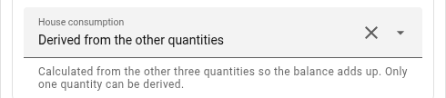
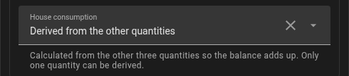

solar + import − export + discharge − charge = house
Deriving a missing quantity
solar, grid, house and battery form one equation:
Leave house out and the card derives it. To derive one of the others instead,
name it explicitly:
entities:
solar: sensor.pv_power
grid: sensor.grid_power
house: sensor.house_consumption
battery: derived # no battery power sensorIn the editor that is Derived from the other quantities at the quantity:


Exactly one quantity may be derived — two unknowns cannot be solved from one equation, and the card says so rather than guessing. Derived nodes are labelled and are not clickable, because there is no entity behind them to show.
Want a history for the derived value? A derived node has no entity, so
tapping it cannot open Home Assistant’s history. If you want that, let Home
Assistant do the same sum: create a Template → Sensor helper (unit W,
device class power, state class measurement - without it no statistics and
no energy, see Energy) with
{{ [0, states('sensor.pv_power')|float(0)
- states('sensor.grid_export')|float(0) + states('sensor.grid_import')|float(0)
+ states('sensor.battery_discharge')|float(0) - states('sensor.battery_charge')|float(0)]|max|round(0) }}and use that sensor as house. It is the card’s formula, only now it is
recorded - history, statistics and automations get it too.
A note on accuracy: deriving the house value is convenient but only as good as its inputs. On the reference installation, deriving it from 60-second grid and battery sensors was off by up to 8.7 kW during load changes, while a measured 5-second sensor followed within 4 seconds. If you have a fast house sensor, use it.
The exception is a house sensor that does not see all of your PV. A hybrid
inverter computes "house" from its own strings, the grid and the battery; a
micro-inverter feeding in behind the meter shows up as less house load, not
as production. If solar includes such sources and house comes from the
inverter, the house is low by exactly that amount — see Balcony solar and
more PV.